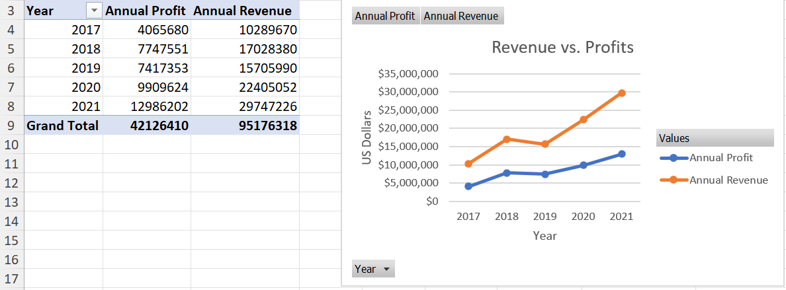
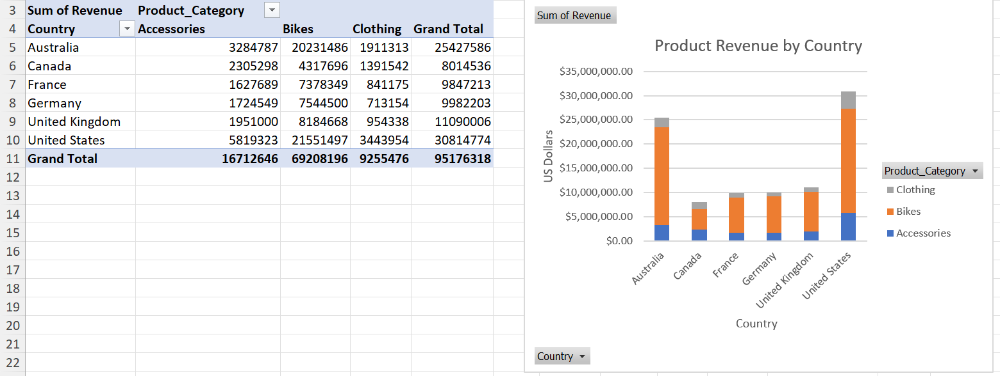
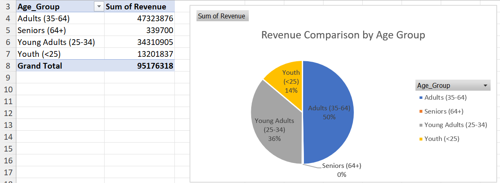

Objective: Analyse bike sales data to identify trends in revenue, profitability, product performance, geographical markets and customer demographics.
As part of my Level 3 Data Technician training, I used Microsoft Excel to analyse a bike sales dataset and identify patterns in revenue and profitability.
Using PivotTables and PivotCharts, I explored sales performance across different years, countries, product categories and customer age groups.
Through this project, I developed practical skills in analysing, summarising and presenting data using Excel.
The dataset contained information on bike sales, including revenue and profit across different years, countries, product categories and customer age groups.
I used these variables to investigate how sales performance varied over time and across different markets, products and customer demographics.
I used PivotTables and PivotCharts to explore the dataset from different perspectives and identify patterns that could support business decision-making.
I compared annual revenue and profit between 2017 and 2021 to examine changes in business performance over time.
Revenue increased from approximately $10.4 million in 2017 to $29.7 million in 2021. Profit followed a similar overall upward trend, increasing from approximately $4.0 million to $12.9 million over the same period.

I compared total revenue across six countries and examined the contribution of Accessories, Bikes and Clothing to overall revenue.
The United States generated the highest total revenue at approximately $30.8 million, followed by Australia at approximately $25.4 million. Bikes were the dominant product category, generating approximately $69.2 million of the $95.2 million total revenue shown in the dataset.

I compared total revenue across four customer age groups to identify which demographic contributed most to overall sales.
Adults aged 35–64 generated approximately $47.3 million, representing around 50% of total revenue. Young Adults aged 25–34 generated approximately $34.3 million, making them the second-largest revenue-generating group. Youth generated approximately $13.2 million, while Seniors generated approximately $340,000.

The analysis highlighted several key patterns within the bike sales dataset.
Revenue increased substantially between 2017 and 2021, indicating strong overall sales growth across the period analysed.
Bikes were the largest contributor to revenue, significantly outperforming Accessories and Clothing.
The United States generated the highest total revenue among the six countries analysed.
Adults aged 35–64 were the largest revenue-generating customer group, accounting for approximately half of total revenue.
This project strengthened my ability to organise, summarise and interpret data using Microsoft Excel. I developed practical experience using PivotTables and PivotCharts to explore datasets and communicate patterns visually.
I also developed my ability to move beyond simply presenting data and instead identify meaningful insights from the results. This helped me understand how data analysis can be used to support business-focused decision-making.